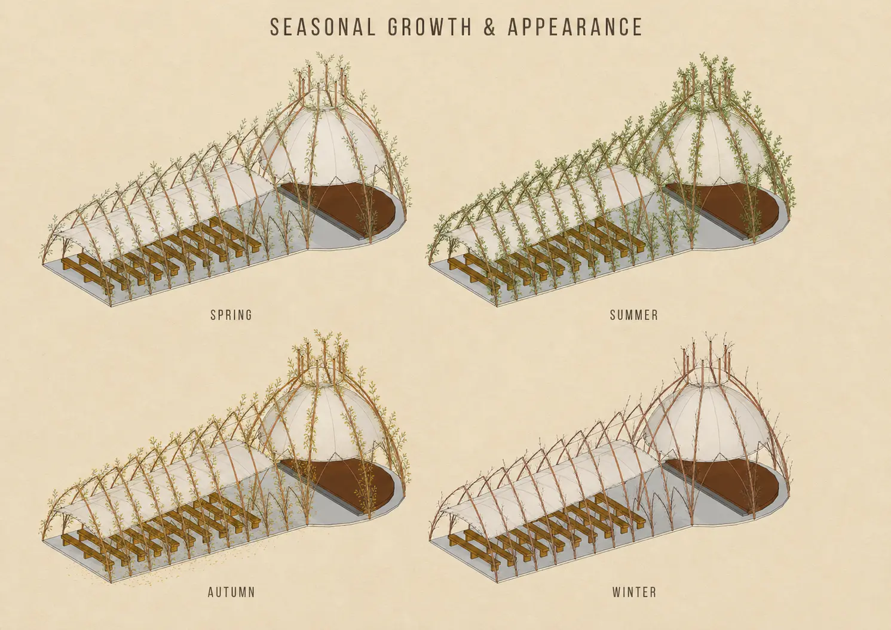
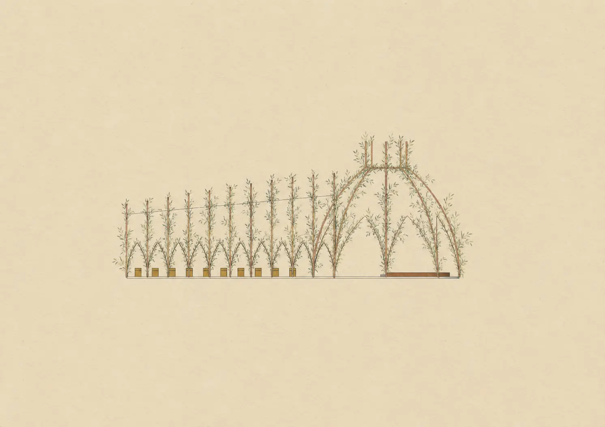

A living outdoor venue designed to grow into its place.
Willow Pavilion is an unbuilt proposal for a community cultural centre seeking a sheltered outdoor place for performances, talks, workshops and informal gatherings. The brief called for a space capable of holding roughly 80 to 100 people, resilient enough for exposed weather and light enough to minimise heavy foundations and permanent construction. Instead of placing a conventional canopy in the landscape, the proposal treats shelter as something that can be planted.
Overlapping circular forms create two connected outdoor rooms. A long audience tunnel holds simple timber benches, while a taller domed space frames a raised performance platform. Living willow is planted in paired rows, bent into repeating arches and woven together. The ribs establish the initial form, then new growth is trained across them to gradually strengthen the enclosure and deepen its shade.
Removable translucent textile panels stretch between the main ribs to provide immediate protection from rain while allowing daylight through. They can be adjusted or removed seasonally as the willow develops. In spring and summer the pavilion becomes increasingly leafy and enclosed; in autumn it changes colour; in winter the woven structure remains visible as a lighter, more open frame.
The design works as both an event space and a long-term act of collective care. A clear, level ground plane connects the audience area and stage, while loose programming allows the pavilion to shift between seated performances, standing events, workshops and everyday use. Seasonal pruning, reweaving new shoots and checking the textile ties become part of maintaining a structure that is never completely finished.

